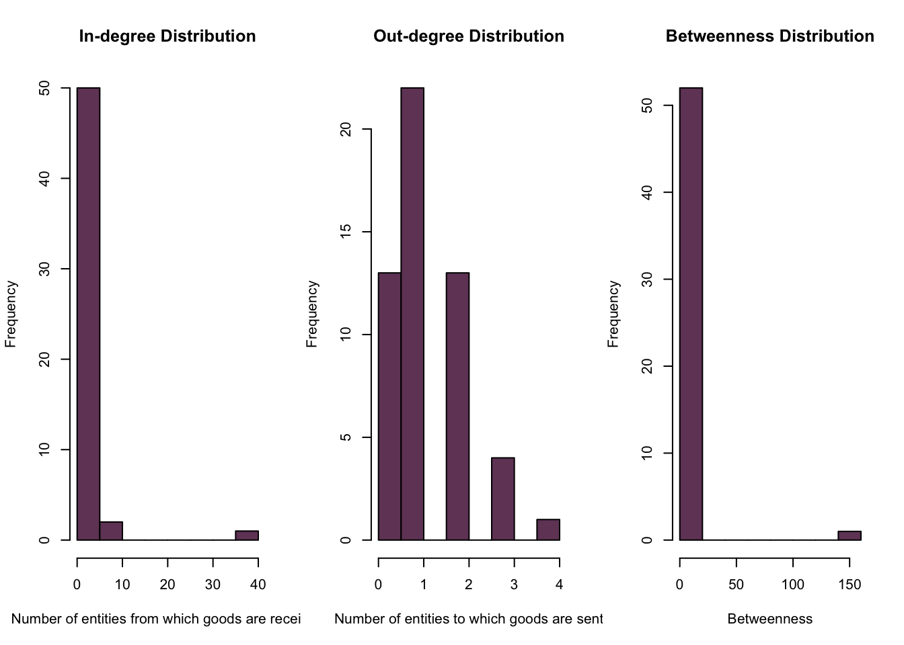
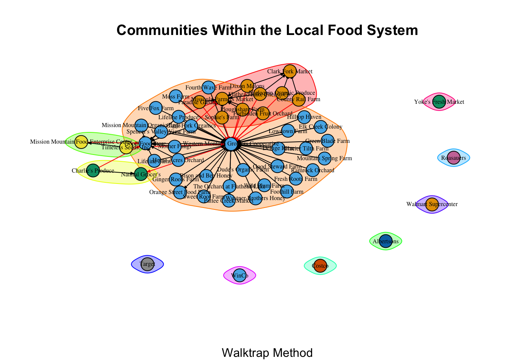

Code
# read in data
nodes <- read.csv("food_system_network - nodelist.csv", header = T, as.is = T)
links <- read.csv("food_system_network - edgelist.csv", header = T, as.is = T)A Network Analysis
Interest in locally produced food has grown significantly over the years, as evidenced by the expansion of local food systems in regions across the United States. Yet while some have become incredibly robust—weathering closures during COVID with ease and even capitalizing on the opportunities presented by the disruption to the conventional food system—others have faltered and stalled. Why? What makes a food system successful and resilient?
Network analysis offers a unique opportunity to understand food systems as networks, allowing us to identify network features that are determinants of food system success and resilience.
Identifying these features requires the analysis of many, many local food systems as networks, which is beyond the scope of this project. This analysis, then, will serve as a first step by developing a framework for analysis that can be replicated with other food systems in the future.
What are the network determinants of success and resilience for local food systems?
H₁: How a network is formed is a determinant of success/resilience.
H₂: Network size is a determinant of success/resilience.
H₃: The category of entity (i.e. producer, processor, distributor, retailer) with the highest degree centralization is a determinant of success/resilience.
H₄: The category of entity (i.e. producer, processor, distributor, retailer) with the highest betweenness centralization is a determinant of success/resilience.
Testing these hypotheses will not be possible until I have analyzed data from enough networks to build a model in which these features are the predictor variables and food system success and resilience are the outcome variables. For this project, then, I will explore the aforementioned measures and test the following hypotheses pertaining to network formation:
H₁: The degree centralization is different than what we would expect if this network were formed by chance.
H₂: The betweenness centralization is different than what we would expect if this network were formed by chance.
All data were collected by me and compiled into a node list and edge list.
A node is any entity along the local food supply chain: producer, processor, distributor, retailer.
A tie represents that goods are flowing between two entities. It is a binary classification and does not indicate the type or volume of goods flowing.
I used the Abundant Montana Local Food Guide, Google Maps, websites of known entities, and field identification and verification to compile both the node and edge list.
I will perform a CUG-test to test my hypotheses about network formation.
I’ll begin by reading in my data and transforming it into a network object.
# read in data
nodes <- read.csv("food_system_network - nodelist.csv", header = T, as.is = T)
links <- read.csv("food_system_network - edgelist.csv", header = T, as.is = T)# preview
head(nodes, 5) node node_attribute node_attribute_subtype color
1 Bison and Bee Honey producer specialty products #714466
2 Clark Fork Organics producer general produce #714466
3 County Rail Farm producer general produce #714466
4 Deluge Farm producer general produce #714466
5 Dixon Melons producer general produce #714466head(links, 5) from to
1 Bison and Bee Honey Western Montana Growers Cooperative
2 Charlie's Produce Good Food Store
3 Charlie's Produce Natural Grocer's
4 Clark Fork Organics Western Montana Growers Cooperative
5 Clark Fork Organics Missoula Farmers Market# create network object - igraph
net <- graph_from_data_frame(d = links, vertices = nodes, directed = T)
# check
class(net)[1] "igraph"print(net)IGRAPH 42d8915 DN-- 53 64 --
+ attr: name (v/c), node_attribute (v/c), node_attribute_subtype (v/c),
| color (v/c)
+ edges from 42d8915 (vertex names):
[1] Bison and Bee Honey->Western Montana Growers Cooperative
[2] Charlie's Produce ->Good Food Store
[3] Charlie's Produce ->Natural Grocer's
[4] Clark Fork Organics->Western Montana Growers Cooperative
[5] Clark Fork Organics->Missoula Farmers Market
[6] Clark Fork Organics->Good Food Store
[7] County Rail Farm ->Clark Fork Market
+ ... omitted several edgesThis network is directed, named, and contains 53 nodes and 64 ties. It is unweighted, meaning that each tie represents that goods are flowing but does not convey any other information, such as the type or volume of goods.
# calc density
graph.density(net)[1] 0.02322206The density of this network appears to be extremely low, although until I have data from other food system networks I can’t know whether it is low for this type of network.
# dyad census
igraph::dyad.census(net)$mut
[1] 0
$asym
[1] 64
$null
[1] 1314# triad census
igraph::triad.census(net) [1] 21081 1433 0 24 739 142 0 0 7 0 0 0
[13] 0 0 0 0There are 0 mutual ties. That is, there are no node pairs who exchange goods with one another—all 64 ties are asymmetrical. There are 1,314 null ties, meaning that for those node pairs there is no flow of goods at all. This is not surprising, as most producers do not sell their products to other producers but to distributors or retailers. And while distributors and retailers purchase from producers, they do not typically sell any products to them.
I have included the censuses as a point of comparison between food system networks as I continue this project but, given the nature of ties between nodes in a food supply chain, dyads and triads might not be as useful in evaluating supply chain networks as they are in evaluating other types of networks.
# get number of components
igraph::components(net)$no[1] 8# get size of components
igraph::components(net)$csize[1] 46 1 1 1 1 1 1 1This network has 8 components, one of which contains 46 nodes and 7 isolates.
The measure of status that I am interested in is degree centrality (both in/out, as this is a directed network). Degree centrality—the number of nodes to which the focal node is connected—is important in the context of a food system because entities with high degree centrality likely have significant influence within the system. In price setting, for example. In comparing local food systems to one another, degree distribution will likely be relevant, as well as which type of entity has the highest degree centrality.
The measure of power that I am interested in is betweenness centrality. This measure is extremely important to consider when thinking about resilience because entities with high betweenness centrality are likely critical to the system’s ability to withstand shock. As with degree centrality, the distribution and type of entity with the highest betweenness centrality will likely be important when comparing local food systems.
# create dataframe of node degrees and betweenness
net_nodes <- data.frame(name = V(net)$name, degree = degree(net)) %>%
mutate(indegree = degree(net, mode = "in", loops = FALSE),
outdegree = degree(net, mode = "out", loops = FALSE),
between = betweenness(net))
print(net_nodes) name
Bison and Bee Honey Bison and Bee Honey
Clark Fork Organics Clark Fork Organics
County Rail Farm County Rail Farm
Deluge Farm Deluge Farm
Dixon Melons Dixon Melons
Dude's Organic Farm Dude's Organic Farm
Elk Creek Colony Elk Creek Colony
Five Fox Farm Five Fox Farm
Flathead Lake Cheese Co. Flathead Lake Cheese Co.
Foothill Farm Foothill Farm
Forbidden Fruit Orchard Forbidden Fruit Orchard
Fourth Wave Farm Fourth Wave Farm
Fresh Roots Farm Fresh Roots Farm
Ginger Roots Farm Ginger Roots Farm
Glacier Tilth Farm Glacier Tilth Farm
Good Steward Farm Good Steward Farm
Green Blade Farm Green Blade Farm
Harlequin Organic Produce Harlequin Organic Produce
Hilltop Haven Hilltop Haven
Home Acres Orchard Home Acres Orchard
Lifeline Farm Lifeline Farm
Lifeline Produce Lifeline Produce
Lowdown Farm Lowdown Farm
Mission Mountain Organic Eggs Mission Mountain Organic Eggs
Moss Farm Moss Farm
Mother Fungi Mother Fungi
Mountain Spring Farm Mountain Spring Farm
Paradise Gardens Paradise Gardens
Ploughshare Farm Ploughshare Farm
Ramrock Orchard Ramrock Orchard
Sophie's Farm Sophie's Farm
Spencer's Valley View Farm Spencer's Valley View Farm
Sweet Root Farm Sweet Root Farm
The Orchard at Flathead Lake The Orchard at Flathead Lake
Timeless Seeds, Inc. Timeless Seeds, Inc.
Wild Plum Farm Wild Plum Farm
Wustner Brothers Honey Wustner Brothers Honey
Albertsons Albertsons
Charlie's Produce Charlie's Produce
Clark Fork Market Clark Fork Market
Costco Costco
Good Food Store Good Food Store
Mission Mountain Food Enterprise Center Mission Mountain Food Enterprise Center
Missoula Farmers Market Missoula Farmers Market
Natural Grocer's Natural Grocer's
Orange Street Food Farm Orange Street Food Farm
Pattee Creek Market Pattee Creek Market
Roasauers Roasauers
Target Target
Walmart Supercenter Walmart Supercenter
Western Montana Growers Cooperative Western Montana Growers Cooperative
WinCo WinCo
Yoke's Fresh Market Yoke's Fresh Market
degree indegree outdegree between
Bison and Bee Honey 1 0 1 0.0
Clark Fork Organics 3 0 3 0.0
County Rail Farm 2 0 2 0.0
Deluge Farm 1 0 1 0.0
Dixon Melons 3 0 3 0.0
Dude's Organic Farm 1 0 1 0.0
Elk Creek Colony 1 0 1 0.0
Five Fox Farm 1 0 1 0.0
Flathead Lake Cheese Co. 3 0 3 0.0
Foothill Farm 1 0 1 0.0
Forbidden Fruit Orchard 2 0 2 0.0
Fourth Wave Farm 1 0 1 0.0
Fresh Roots Farm 1 0 1 0.0
Ginger Roots Farm 1 0 1 0.0
Glacier Tilth Farm 1 0 1 0.0
Good Steward Farm 1 0 1 0.0
Green Blade Farm 1 0 1 0.0
Harlequin Organic Produce 2 0 2 0.0
Hilltop Haven 1 0 1 0.0
Home Acres Orchard 2 0 2 0.0
Lifeline Farm 2 0 2 0.0
Lifeline Produce 3 0 3 0.0
Lowdown Farm 1 0 1 0.0
Mission Mountain Organic Eggs 2 0 2 0.0
Moss Farm 1 0 1 0.0
Mother Fungi 2 0 2 0.0
Mountain Spring Farm 1 0 1 0.0
Paradise Gardens 2 0 2 0.0
Ploughshare Farm 2 0 2 0.0
Ramrock Orchard 1 0 1 0.0
Sophie's Farm 2 0 2 0.0
Spencer's Valley View Farm 2 0 2 0.0
Sweet Root Farm 1 0 1 0.0
The Orchard at Flathead Lake 1 0 1 0.0
Timeless Seeds, Inc. 2 0 2 0.0
Wild Plum Farm 1 0 1 0.0
Wustner Brothers Honey 1 0 1 0.0
Albertsons 0 0 0 0.0
Charlie's Produce 2 0 2 0.0
Clark Fork Market 4 4 0 0.0
Costco 0 0 0 0.0
Good Food Store 10 10 0 0.0
Mission Mountain Food Enterprise Center 2 1 1 0.5
Missoula Farmers Market 8 8 0 0.0
Natural Grocer's 2 2 0 0.0
Orange Street Food Farm 1 1 0 0.0
Pattee Creek Market 1 1 0 0.0
Roasauers 0 0 0 0.0
Target 0 0 0 0.0
Walmart Supercenter 0 0 0 0.0
Western Montana Growers Cooperative 41 37 4 140.5
WinCo 0 0 0 0.0
Yoke's Fresh Market 0 0 0 0.0# get summary
summary(net_nodes) name degree indegree outdegree
Length:53 Min. : 0.000 Min. : 0.000 Min. :0.000
Class :character 1st Qu.: 1.000 1st Qu.: 0.000 1st Qu.:1.000
Mode :character Median : 1.000 Median : 0.000 Median :1.000
Mean : 2.415 Mean : 1.208 Mean :1.208
3rd Qu.: 2.000 3rd Qu.: 0.000 3rd Qu.:2.000
Max. :41.000 Max. :37.000 Max. :4.000
between
Min. : 0.00
1st Qu.: 0.00
Median : 0.00
Mean : 2.66
3rd Qu.: 0.00
Max. :140.50 #png(filename = "distributions.png") # save as png
par(mfrow = c(1,3))
# plot in-deg dist
hist(net_nodes$indegree, col = "#714466", main = "In-degree Distribution", xlab = "Number of entities from which goods are received")
# plot out-deg dist
hist(net_nodes$outdegree, col = "#714466", main = "Out-degree Distribution", xlab = "Number of entities to which goods are sent")
# plot betweenness
hist(net_nodes$between, col = "#714466", main = "Betweenness Distribution", xlab = "Betweenness")
par(mfrow = c(1,1))
#dev.off()We can see that using both degree centrality and betweenness centrality, the Western Montana Growers Cooperative is the most important individual entity in the network. Moreover, we can also see that the network is extremely uneven in that there is only one entity with high degree and high betweenness centrality.
# create plot
#png(filename = "network.png") # save as png
plot(net, vertex.shape = "circle", vertex.size = 7, vertex.label.cex = .5, vertex.label.color = "black", edge.arrow.size = .25, rescale = TRUE, asp = 0)
#dev.off()We can see in the above plot that the Western Montana Growers Cooperative (in blue) is, indeed, the node with the highest degree centrality and the highest betweenness centrality. We can also easily identify the isolates, all of which are large food retailers. It’s important to note that they are only isolates in the local food setting.
I’ll use several methods of detecting communities within a network, beginning with the fast and greedy method, and then compare them.
# fast and greedy
net_fg <- cluster_fast_greedy(as.undirected(net))
# get groups
igraph::groups(net_fg)$`1`
[1] "Home Acres Orchard"
[2] "Lifeline Farm"
[3] "Mission Mountain Organic Eggs"
[4] "Mother Fungi"
[5] "Spencer's Valley View Farm"
[6] "Timeless Seeds, Inc."
[7] "Charlie's Produce"
[8] "Good Food Store"
[9] "Mission Mountain Food Enterprise Center"
[10] "Natural Grocer's"
$`2`
[1] "Bison and Bee Honey" "Deluge Farm"
[3] "Dude's Organic Farm" "Elk Creek Colony"
[5] "Five Fox Farm" "Foothill Farm"
[7] "Fourth Wave Farm" "Fresh Roots Farm"
[9] "Ginger Roots Farm" "Glacier Tilth Farm"
[11] "Good Steward Farm" "Green Blade Farm"
[13] "Hilltop Haven" "Lowdown Farm"
[15] "Moss Farm" "Mountain Spring Farm"
[17] "Ramrock Orchard" "Sweet Root Farm"
[19] "The Orchard at Flathead Lake" "Wild Plum Farm"
[21] "Wustner Brothers Honey" "Orange Street Food Farm"
[23] "Pattee Creek Market" "Western Montana Growers Cooperative"
$`3`
[1] "Clark Fork Organics" "Forbidden Fruit Orchard"
[3] "Lifeline Produce" "Paradise Gardens"
[5] "Ploughshare Farm" "Sophie's Farm"
[7] "Missoula Farmers Market"
$`4`
[1] "County Rail Farm" "Dixon Melons"
[3] "Flathead Lake Cheese Co." "Harlequin Organic Produce"
[5] "Clark Fork Market"
$`5`
[1] "Albertsons"
$`6`
[1] "Costco"
$`7`
[1] "Roasauers"
$`8`
[1] "Target"
$`9`
[1] "Walmart Supercenter"
$`10`
[1] "WinCo"
$`11`
[1] "Yoke's Fresh Market"# plot fast and greedy
#png(filename = "fg_comms.png") # save as png
plot(net_fg, net, vertex.shape = "circle", vertex.size = 7, vertex.label.cex = .5, vertex.label.color = "black", edge.arrow.size = .25, rescale = TRUE, asp = 0, sub = "Fast and Greedy Method")
#dev.off()These groups do actually make sense and can be broadly categorized as follows:
# walktrap
net_wt <- walktrap.community(net, steps = 4)
# get groups
igraph::groups(net_wt)$`1`
[1] "County Rail Farm" "Dixon Melons"
[3] "Flathead Lake Cheese Co." "Forbidden Fruit Orchard"
[5] "Harlequin Organic Produce" "Paradise Gardens"
[7] "Ploughshare Farm" "Sophie's Farm"
[9] "Clark Fork Market" "Missoula Farmers Market"
$`2`
[1] "Bison and Bee Honey" "Clark Fork Organics"
[3] "Deluge Farm" "Dude's Organic Farm"
[5] "Elk Creek Colony" "Five Fox Farm"
[7] "Foothill Farm" "Fourth Wave Farm"
[9] "Fresh Roots Farm" "Ginger Roots Farm"
[11] "Glacier Tilth Farm" "Good Steward Farm"
[13] "Green Blade Farm" "Hilltop Haven"
[15] "Home Acres Orchard" "Lifeline Farm"
[17] "Lifeline Produce" "Lowdown Farm"
[19] "Mission Mountain Organic Eggs" "Moss Farm"
[21] "Mother Fungi" "Mountain Spring Farm"
[23] "Ramrock Orchard" "Spencer's Valley View Farm"
[25] "Sweet Root Farm" "The Orchard at Flathead Lake"
[27] "Wild Plum Farm" "Wustner Brothers Honey"
[29] "Good Food Store" "Orange Street Food Farm"
[31] "Pattee Creek Market" "Western Montana Growers Cooperative"
$`3`
[1] "Charlie's Produce" "Natural Grocer's"
$`4`
[1] "Timeless Seeds, Inc."
[2] "Mission Mountain Food Enterprise Center"
$`5`
[1] "Albertsons"
$`6`
[1] "Costco"
$`7`
[1] "Roasauers"
$`8`
[1] "Target"
$`9`
[1] "Walmart Supercenter"
$`10`
[1] "WinCo"
$`11`
[1] "Yoke's Fresh Market"# plot walktrap
plot(net_wt, net, vertex.shape = "circle", vertex.size = 7, vertex.label.cex = .5, vertex.label.color = "black", edge.arrow.size = .25, rescale = TRUE, asp = 0, main = "Communities Within the Local Food System", sub = "Walktrap Method")
After tuning the steps parameter, this is the best grouping the walktrap method could produce. These communities make less sense than the those identified by the first method. Some communities that the fast and greedy method identified as unique have been collapsed into a single community in a way that does not make sense to me.
# leading label
net_ll <- label.propagation.community(net)
# get groups
igraph::groups(net_ll)$`1`
[1] "Bison and Bee Honey"
$`2`
[1] "Clark Fork Organics" "Missoula Farmers Market"
$`3`
[1] "County Rail Farm"
$`4`
[1] "Deluge Farm"
$`5`
[1] "Dixon Melons"
$`6`
[1] "Dude's Organic Farm"
$`7`
[1] "Elk Creek Colony"
$`8`
[1] "Five Fox Farm"
$`9`
[1] "Flathead Lake Cheese Co."
$`10`
[1] "Foothill Farm"
$`11`
[1] "Forbidden Fruit Orchard"
$`12`
[1] "Fourth Wave Farm"
$`13`
[1] "Fresh Roots Farm"
$`14`
[1] "Ginger Roots Farm"
$`15`
[1] "Glacier Tilth Farm"
$`16`
[1] "Good Steward Farm"
$`17`
[1] "Green Blade Farm"
$`18`
[1] "Harlequin Organic Produce" "Clark Fork Market"
$`19`
[1] "Hilltop Haven"
$`20`
[1] "Home Acres Orchard"
$`21`
[1] "Lifeline Farm"
$`22`
[1] "Lifeline Produce" "Good Food Store"
$`23`
[1] "Lowdown Farm"
$`24`
[1] "Mission Mountain Organic Eggs"
$`25`
[1] "Moss Farm"
$`26`
[1] "Mother Fungi"
$`27`
[1] "Mountain Spring Farm"
$`28`
[1] "Paradise Gardens"
$`29`
[1] "Ploughshare Farm"
$`30`
[1] "Ramrock Orchard"
$`31`
[1] "Sophie's Farm"
$`32`
[1] "Spencer's Valley View Farm"
$`33`
[1] "Sweet Root Farm"
$`34`
[1] "The Orchard at Flathead Lake"
$`35`
[1] "Timeless Seeds, Inc."
[2] "Mission Mountain Food Enterprise Center"
$`36`
[1] "Wild Plum Farm"
$`37`
[1] "Wustner Brothers Honey" "Orange Street Food Farm"
[3] "Pattee Creek Market" "Western Montana Growers Cooperative"
$`38`
[1] "Albertsons"
$`39`
[1] "Charlie's Produce" "Natural Grocer's"
$`40`
[1] "Costco"
$`41`
[1] "Roasauers"
$`42`
[1] "Target"
$`43`
[1] "Walmart Supercenter"
$`44`
[1] "WinCo"
$`45`
[1] "Yoke's Fresh Market"# plot leading label
plot(net_ll, net, vertex.shape = "circle", vertex.size = 7, vertex.label.cex = .5, vertex.label.color = "black", edge.arrow.size = .25, rescale = TRUE, asp = 0, main = "Communities Within the Local Food System", sub = "Leading Label Propagation Method")
Leading label propagation has identified 45 distinct communities, which does not fit with how I know these entities interact.
# compare modularity scores
mods <- c(fastgreedy = modularity(net_fg), walktrap = modularity(net_wt), llabel = modularity(net_ll))
print(mods)fastgreedy walktrap llabel
0.31689453 0.22998047 0.06054688 The modularity scores confirm what examination of the groupings indicate—that the fast and greedy method has done the best job of identifying communities within the network.
The two hypotheses I will test are:
H₁: The degree centralization is different than what we would expect if this network were formed by chance. I will condition on both size (the number of nodes) and edges (the number of ties).
H₂: The betweenness centralization is different than what we would expect if this network were formed by chance. I will condition on both size (the number of nodes) and edges (the number of ties).
# coerce network object
net_stat <- intergraph::asNetwork(net)
# check
class(net_stat)[1] "network"print(net_stat) Network attributes:
vertices = 53
directed = TRUE
hyper = FALSE
loops = FALSE
multiple = FALSE
bipartite = FALSE
total edges= 64
missing edges= 0
non-missing edges= 64
Vertex attribute names:
color node_attribute node_attribute_subtype vertex.names
No edge attributes# cug test - cond on size
cug_d_size <- cug.test(net_stat,
FUN = centralization,
FUN.arg = list(FUN = "degree", mode = "all"),
mode = "digraph",
cmode = "size")
# cug test - cond on edges
cug_d_edges <- cug.test(net_stat,
FUN = centralization,
FUN.arg = list(FUN = "degree", mode = "all"),
mode = "digraph",
cmode = "edges")
print(cug_d_size)
Univariate Conditional Uniform Graph Test
Conditioning Method: size
Graph Type: digraph
Diagonal Used: FALSE
Replications: 1000
Observed Value: 0.3855581
Pr(X>=Obs): 0
Pr(X<=Obs): 1 print(cug_d_edges)
Univariate Conditional Uniform Graph Test
Conditioning Method: edges
Graph Type: digraph
Diagonal Used: FALSE
Replications: 1000
Observed Value: 0.3855581
Pr(X>=Obs): 0
Pr(X<=Obs): 1 # combine outputs
cug_d <- c(cug_d_size$obs.stat,
cug_d_edges$obs.stat)
pct_g_d <- c(cug_d_size$pgteobs,
cug_d_edges$pgteobs)
pct_l_d <- c(cug_d_size$plteobs,
cug_d_edges$plteobs)
degree <- cbind(cug_d,
pct_g_d,
pct_l_d)
rownames(degree) <- c("Size", "Edges")
round(degree, 2) cug_d pct_g_d pct_l_d
Size 0.39 0 1
Edges 0.39 0 1# plot
#png(filename = "CUG_degree.png")
par(mfrow = c(1,2))
plot(cug_d_size, col = "#ebb83b", main = "Degree \nConditioned on Size" )
plot(cug_d_edges, col = "#ebb83b", main = "Degree \nConditioned on Edges" )
par(mfrow=c(1,1))
#dev.offWe can see from the above table and plots that the observed degree centralization is very uncommon for a network of this size and with this number of ties. That is, it was likely not formed by chance.
# cug test - cond on size
cug_b_size <- cug.test(net_stat,
FUN = centralization,
FUN.arg = list(FUN = "betweenness"),
mode = "digraph",
cmode = "size")
# cug test - cond on edges
cug_b_edges <- cug.test(net_stat,
FUN = centralization,
FUN.arg = list(FUN = "betweenness"),
mode = "digraph",
cmode = "edges")
print(cug_b_size)
Univariate Conditional Uniform Graph Test
Conditioning Method: size
Graph Type: digraph
Diagonal Used: FALSE
Replications: 1000
Observed Value: 0.05297526
Pr(X>=Obs): 0
Pr(X<=Obs): 1 print(cug_b_edges)
Univariate Conditional Uniform Graph Test
Conditioning Method: edges
Graph Type: digraph
Diagonal Used: FALSE
Replications: 1000
Observed Value: 0.05297526
Pr(X>=Obs): 0.48
Pr(X<=Obs): 0.52 # combine outputs
cug_b <- c(cug_b_size$obs.stat,
cug_b_edges$obs.stat)
pct_g <- c(cug_b_size$pgteobs,
cug_b_edges$pgteobs)
pct_l <- c(cug_b_size$plteobs,
cug_b_edges$plteobs)
betweenness <- cbind(cug_b,
pct_g,
pct_l)
rownames(betweenness) <- c("Size", "Edges")
round(betweenness, 2) cug_b pct_g pct_l
Size 0.05 0.00 1.00
Edges 0.05 0.48 0.52# plot
#png(filename = "CUG_betweenness.png")
par(mfrow = c(1,2))
plot(cug_b_size, col = "#ebb83b", main = "Betweenness \nConditioned on Size" )
plot(cug_b_edges, col = "#ebb83b", main = "Betweenness \nConditioned on Edges" )
par(mfrow=c(1,1))
#dev.offWe can see from the second table and set of plots that the observed betweenness centralization is very uncommon for a network of this size but not uncommon for a network with this number of ties.
We can see from the above exploration that this network is star shaped, meaning that it is likely highly efficient and potentially less resilient. A single node—the Western Montana Growers Cooperative—has the highest degree centrality and the highest betweenness centrality and likely has significant control over the flow of goods (and other content not represented in this network, like information). Thinking about local food system formation, success, and resilience, it may turn out that having one such node is essential. While I haven’t operationalized “success” and “resilience” yet, the local food system in Missoula is generally considered to be fairly robust and, in fact, I coached several nascent local food distributors in other communities who were looking to replicate the success of the Western Montana Growers Cooperative during the COVID-19 pandemic.
I am really interested to see what will surface after I have collected data to analyze other local food systems. That will allow me to determine baselines measurements to compare food systems to. Once I have a dataset in which each local food system (i.e. a network) is its own case and these network features are the variables, I will then operationalize “success” and “resilience” and be able to see which features predict success and resilience. This is critical because the current literature on local food system development tends to be qualitative, leading to a paucity of actionable recommendations to communities looking to create a robust local food system. This project will ultimately contribute to this body of research by providing clear, actionable recommendations that—importantly!—are driven by data.